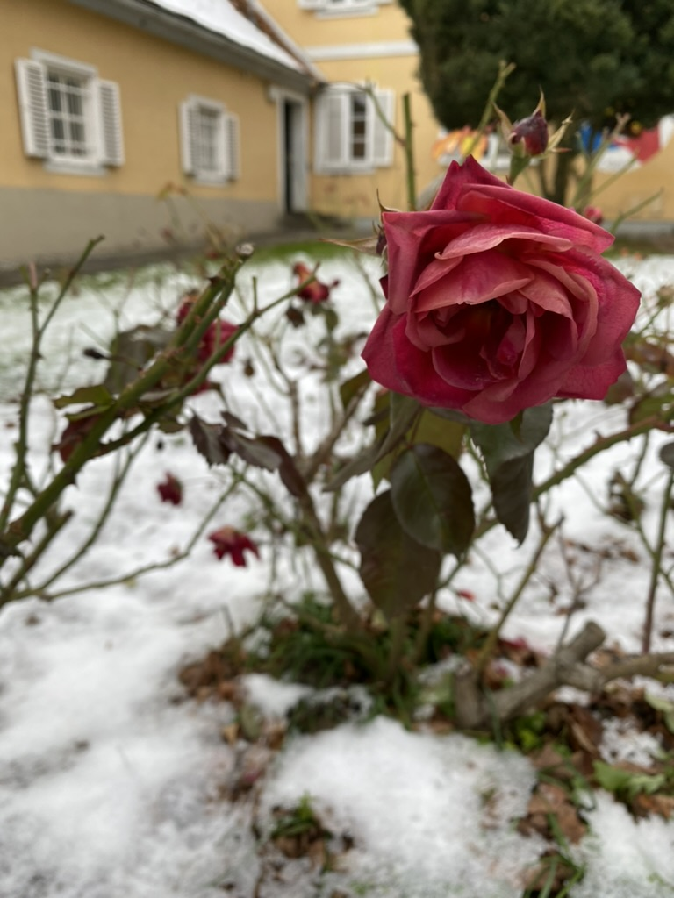
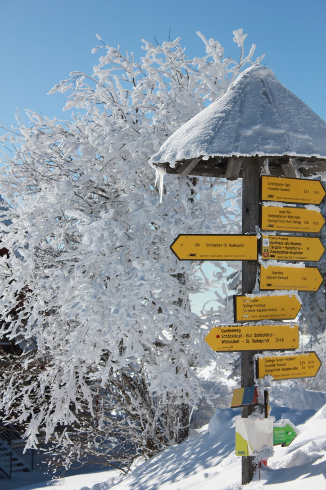
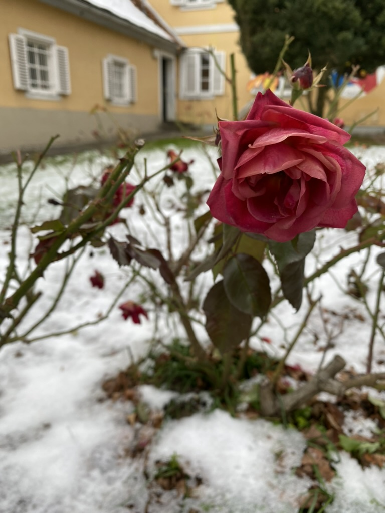
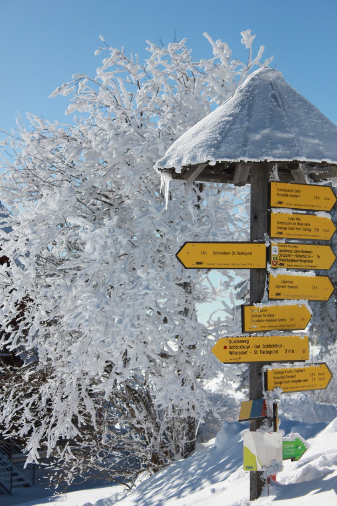

Winter in Graz - Schnee in Graz

 




Schnee in Graz – das ist quasi eine Legende. Obwohl wir uns in Österreich befinden, ist Graz doch zu mediterran geprägt, als dass man hier mit zuverlässigem oder gar reichlichem Schneefall rechnen könnte. Die Bilder, die man im Netz mit tief verschneitem Graz findet, wurden entweder vor 60 Jahren aufgenommen oder stammen von den vereinzelten zwei Tagen im Jahr, an denen für wenige Stunden eine kleine, dünne weiße Decke über der Stadt liegt. Diese ist jedoch auch stets begleitet von einer dicken grauen Wolkendecke, die dem Ganzen einen eher tristen als märchenhaften Anstrich verleiht.
Wer also von einem Winterwunderland in Graz träumt, sollte seine Erwartungen anpassen. Die Chancen stehen gut, dass man eher auf nasse Straßen und milde Temperaturen trifft als auf eine dicke Schneedecke. Dennoch haben die wenigen Schneetage, die Graz erlebt, ihren eigenen Reiz. Die Stadt wirkt dann stiller und die historischen Gebäude bekommen einen besonderen, fast melancholischen Charme, bevor der Schnee schnell wieder dahinschmilzt. Der Schlossberg mit seinem Zugang an der Wickenburggasse bietet an solchen seltenen Tagen einen malerischen Anblick, wenn sich ein Hauch von Weiß auf die Bäume legt. Es ist ein flüchtiges Glück, das man schnell festhalten sollte.
Fun-Facts zu Schnee in Graz:
- Mediterraner Einfluss: Graz liegt in einer windgeschützten Beckenlage, die es vor kalten Winden schützt und zu einem mediterraneren Klima als im Rest Österreichs führt.
- Sonnenschein-Stadt: Graz ist bekannt für seine vielen Sonnentage im Jahr, was den wenigen Schneetagen oft entgegensteht.
- Winterwanderungen ohne Schnee: Wer im Winter wandern möchte, kann dies oft auf den Grazer Hausbergen tun, ohne auf Schnee angewiesen zu sein.
- Fotomotiv auf Zeit: Die wenigen Schneetage sind bei Fotografen beliebt, um die seltene weiße Pracht festzuhalten, bevor sie verschwindet.